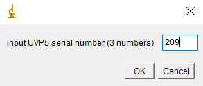
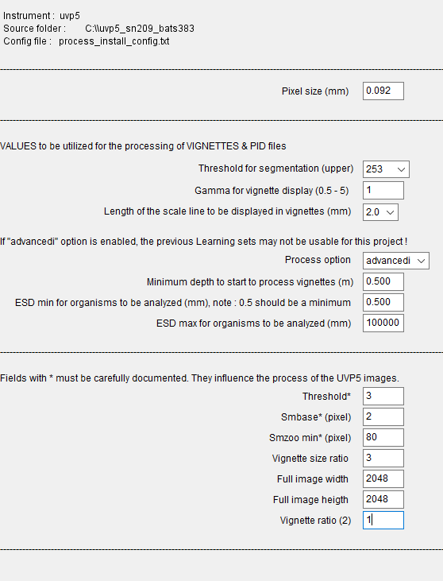

Project Configuration & On-Ship Piloting
Setting up a new UVP Project
When setting up a new UVP project, it is important that the configuration is done correctly. This will impact the processing of raw vignettes and particle data.
- First, you have to enter the UVP Serial Number. This should be 209.

Next, you must fill out the project name. Follow the lab’s naming convention:
[A-Z][A-Z](0-9)_[*]
This format should be a two-letter ship abbriveation with the cruise number. Then any project acyronyms should be listed separated as underscores.
Note that the most important part of this project name is the cruise number. If there is no project acyronym, that is fine. Multiple project acroynms should be separated by underscores if they are on the same cruise. Alternatively, multiple UVP projects can be created if the scientific projects on a cruise are distinct and need to be separated (data goes to different people or something).
For example:
- AE2112_bats385_hs1413
OR
- AE2112_bats365
- AE2112_hs1413
- AE2112_bats385_hs1413
Metadata should be entered with operator, cheif scientistis, and data owner information
Project Configuration is critically important.
The project configuration defaults are not always correct.
They should be filled in accordingly:

Specifically Note:
- pixel size is 0.092 (it is default at 0.088)
- ESDmin should be set to 0.5 (it is default at 0.25)
- smbase should be set to 2 (it is default at 3)
- pixel size is 0.092 (it is default at 0.088)
Finally, select yes for enabling piloting tools:
- Here the settings may vary depending on how the CTD is configured.
- Be sure to select the appropriate COMMs port to talk to the UVP
If this is incorrectly configured, the project configuration cannot be fixed.
- Here the settings may vary depending on how the CTD is configured.
There will be a warning which instructs users to get .ini files from the UVP
- This must be done once at the start of project configuration.
- Navagate to UVP Piloting tools.
- Select the option to get configuration files from UVP Camera.
Project Configuration is now complete
- This must be done once at the start of project configuration.